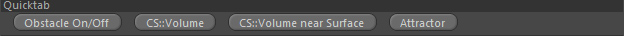
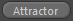

Quicktab
Parameters
Quicktab

Obstacle On/Off
Generates or removes an Effex obstacle tag. This will automatically make the volume an obstacle in the framework.
See obstacle tag for more information..
CS::Volume
Generates a volume constraint and automatically links this volume in it.
CS::Volume near Surface
Generates a volume constraint and links this volume in it.
Furthermore the constraint is set up so that it checks only for areas near the volume's surface.
Attractor

Generates an attractor force pointing at this volume.